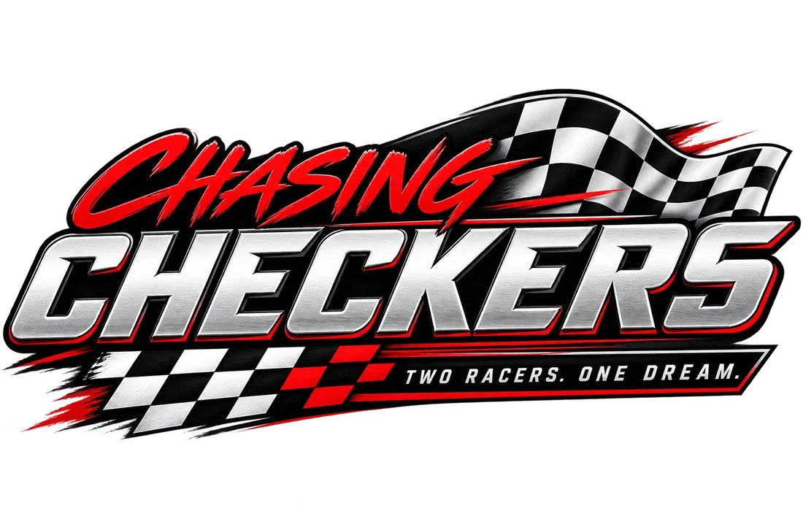

Chassis
Why a CIK frame is wrong under nine horsepower
A kart has no differential — it turns by twisting enough to lift the inside rear. Frames built for 30hp two-strokes never get there on a 206.
Drafting

The pursuit of performance, for racers looking for an edge. Equipment, setup, and strategy — written by people spending their own money on it.
Every discipline here gets the same treatment: what the equipment actually does, what it costs, and what the people winning are running. We're starting where we're racing. The rest opens as we get there — and we'd rather publish nothing than publish guesses.
Most chassis in a given class will win races. What separates them is whether the tubing and axle suit the power you're making, and whether anyone within driving distance stocks parts on a Saturday. Filter by class, budget, and region. See the section drawn to scale.
Written up as we work through them ourselves. Nothing here is sponsored and nobody pays for placement.
A kart has no differential — it turns by twisting enough to lift the inside rear. Frames built for 30hp two-strokes never get there on a 206.
The middle bearing halves the axle's unsupported span. When to run it, when to pull it, and why hop and push feel identical from the seat.
Build sheet plus consumables, honestly totalled — and the comparison nobody makes: a full KZ year against a Radical race weekend.
Entry counts, used listing volume, and engine builder backlogs are leading indicators. A series folding is a lagging one, and by then it's too late.
What karting actually transfers, what it can't teach, and why running the ladder sequentially is the most common expensive mistake.
The hardest version of this decision — more money, less experience, and a kid who wants the one that looks fastest.
In most classes half a dozen chassis will win. Naming a single best one would be wrong most of the time. We narrow the field and tell you what decides the rest.
When a builder doesn't publish a spec, we say so rather than guessing. A blank field is information about the manufacturer, not a mark against the product.
The fastest kart is usually the one somebody in your paddock can hand you a part for. We weight regional support as heavily as anything mechanical.
We're buying this equipment and racing it. No sponsored placements, no affiliate-driven recommendations. When we get something wrong, we'll say that too.